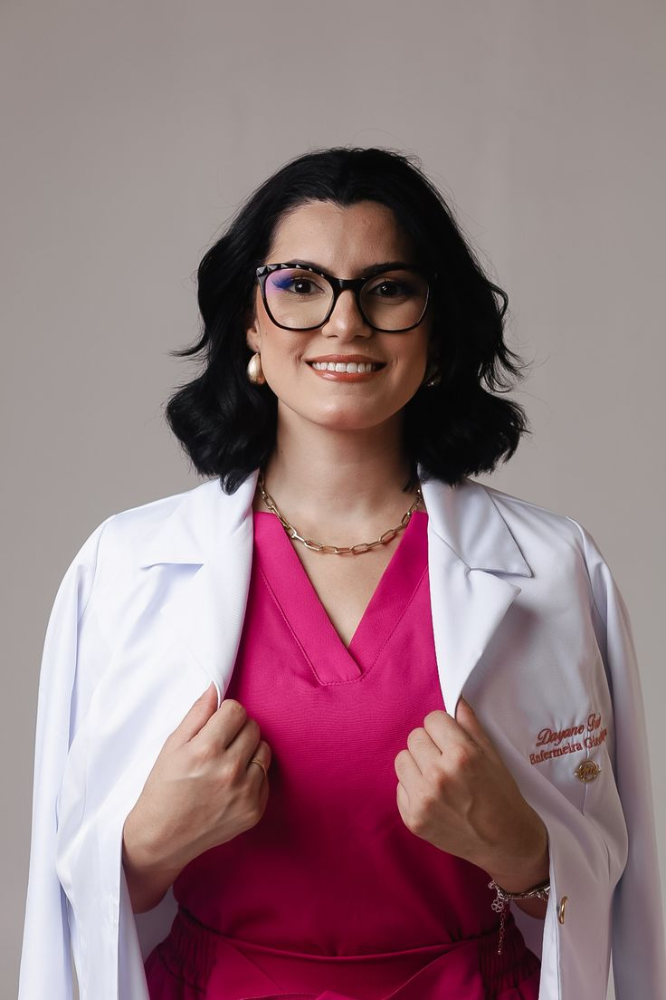

Dra. Helena Duarte
Clínica geral
Dra. Helena Duarte tem 31 anos, é clínica geral formada pela Universidade Federal da Paraíba
(UFPB) e atua há seis anos na atenção primária. Faz o primeiro atendimento de adultos e idosos, acompanha
doenças crônicas como hipertensão e diabetes e valoriza uma escuta atenta e sem pressa. Fora do consultório,
participa de campanhas de prevenção nos bairros atendidos pelo hospital.
Agendar consulta
.jpeg)
Dr. Rafael Menezes
Cardiologia
Dr. Rafael Menezes tem 47 anos, é cardiologista formado pela Universidade de São Paulo (USP) e
fez residência em cardiologia na capital paulista. Trabalha com prevenção de doenças do coração, controle da
pressão arterial e acompanhamento de pacientes após infarto. Coordena o ambulatório de cardiologia do
hospital e dá palestras sobre hábitos saudáveis para a comunidade.
Agendar consulta

Dra. Camila Torres
Pediatria
Dra. Camila Torres tem 28 anos, é pediatra formada pela Universidade Federal de Campina Grande
(UFCG) e fez residência em pediatria no Recife. Atende crianças e adolescentes, acompanha o crescimento e a
vacinação e orienta as famílias sobre alimentação e sono. É conhecida pelo jeito carinhoso com os pequenos e
pela paciência com os pais de primeira viagem.
Agendar consulta
Dr. Paulo Andrade
Ortopedia
Dr. Paulo Andrade tem 35 anos, é ortopedista formado pela Universidade Federal do Rio Grande do
Norte (UFRN). Cuida de fraturas, lesões esportivas e dores na coluna, e acompanha a recuperação dos
pacientes junto com a equipe de fisioterapia. Pratica corrida de rua e gosta de explicar cada tratamento com
calma, para que o paciente entenda todas as etapas.
Agendar consulta

Dr. Marcelo Barros
Geriatria
Dr. Marcelo Barros tem 42 anos, é geriatra formado pela Universidade Federal de Pernambuco
(UFPE), com especialização em saúde do idoso. Acompanha pacientes da terceira idade com foco em qualidade de
vida, memória, mobilidade e uso correto de medicamentos. Mantém um grupo mensal de apoio para cuidadores e
familiares, com espaço para dúvidas e troca de experiências.
Agendar consulta

Dr. Roberto Cavalcanti
Odontologia
Dr. Roberto Cavalcanti tem 45 anos, é cirurgião-dentista formado pela UFPB, com especialização
em endodontia. Atende urgências odontológicas, tratamentos de canal e restaurações, além de orientar sobre a
higiene bucal de toda a família. Sempre sorridente, é lembrado pelos pacientes por transformar até as
consultas mais temidas em momentos tranquilos.
Agendar consulta

Dr. Gustavo Pires
Neurologia
Dr. Gustavo Pires tem 33 anos, é neurologista formado pela Universidade Federal do Ceará (UFC)
e fez residência em neurologia clínica. Investiga e trata dores de cabeça persistentes, enxaqueca, epilepsia
e distúrbios do sono. Também desenvolve pesquisas sobre o impacto do estresse na saúde do cérebro e gosta de
apresentar os resultados em linguagem simples.
Agendar consulta

Dr. Eduardo Lima
Endocrinologia
Dr. Eduardo Lima tem 40 anos, é endocrinologista formado pela Universidade Federal da Bahia
(UFBA). Acompanha pacientes com diabetes, problemas de tireoide, obesidade e alterações hormonais, sempre
com um plano de cuidado individual. Defende que alimentação equilibrada e atividade física fazem parte do
tratamento e participa de ações de prevenção ao diabetes no município.
Agendar consulta